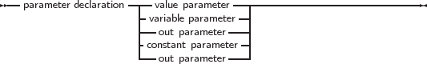

When arguments must be passed to a function or procedure, these parameters must be declared in the formal parameter list of that function or procedure. The parameter list is a declaration of identifiers that can be referred to only in that procedure or function’s block.
_________________________________________________________________________________________________________
Parameters

___________________________________________________________________
Constant parameters, out parameters and variable parameters can also be untyped parameters if they have no type identifier.
As of version 1.1, Free Pascal supports default values for both constant parameters and value parameters, but only for simple types. The compiler must be in OBJFPC or DELPHI mode to accept default values.